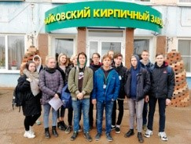
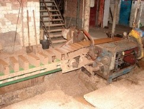

Экскурсия на Чайковский кирпичный завод 2019
В рамках МДК 07.01 «Выполнение работ по профессии 12680 «Каменщик» 25 и 27 сентября для студентов групп 2–08.02А и 2–08.02Б специальности «Строительство и эксплуатация зданий и сооружений» была организована экскурсия на ООО «Чайковский кирпичный завод». Это была приятная возможность не только отвлечься от учебников, но и приобрести новый опыт и яркие впечатления, а это способствует более глубокому и качественному усвоению материала по дисциплине. «Нам, как строителям, было безумно интересно увидеть вживую, как производится продукт, с которым тесно связана наша будущая профессия. Не проникнуть в атмосферу создания кирпича было невозможно, мы увидели все этапы изготовления: конвейеры, по которым подается шихта; пресс, где формируется кирпич; сушилки и печи, в которых происходит процесс обжига при температуре почти в 1000 градусов. Экскурсовод завода всё доходчиво нам объяснял, отвечал на все интересующие нас вопросы, даже дал потрогать еще не обожженный кирпич. Благодаря этой экскурсии, мы получили и усвоили много ценной информации, которая, безусловно, пойдёт нам только на пользу»,-считают студенты. Таким образом, экскурсии являются отличным способом стимулирования студентов к обучению.

